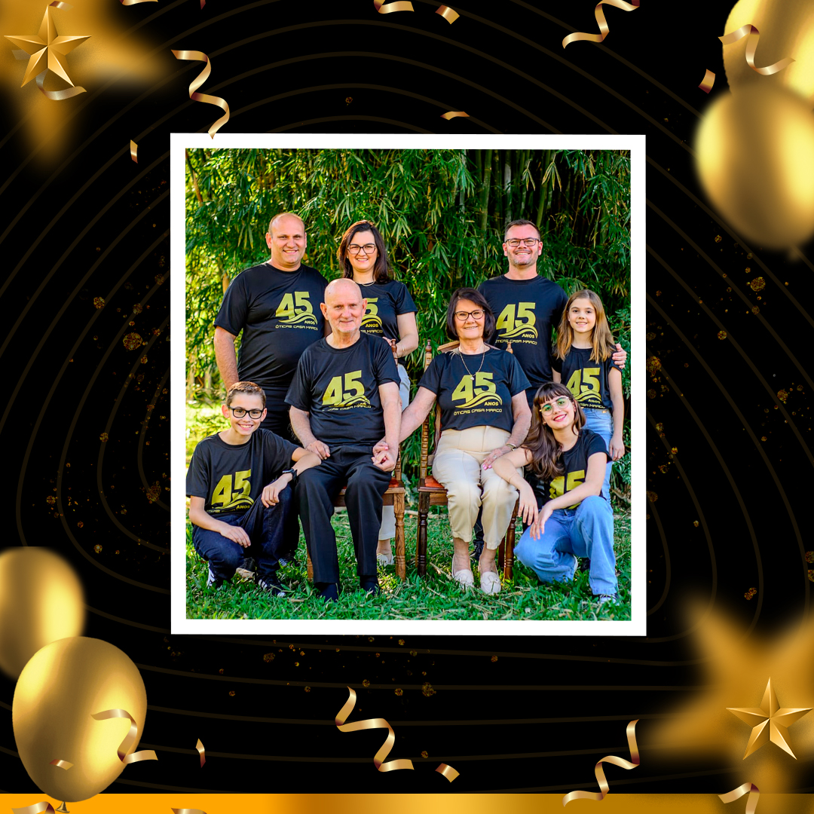

Proposta de Site Institucional
47 anos de tradição merecem uma sede digital.
O cenário atual
Hoje, quem pesquisa pelo nome da empresa encontra fichas genéricas de diretórios, endereços desatualizados e páginas que vocês não controlam. Nenhum desses resultados mostra quem vocês são, o que oferecem ou por que são diferentes.
O cliente que pesquisa antes de ir na loja não consegue ver a equipe, os serviços, nem a tecnologia que vocês têm. E a cada mês, mais gente pesquisa antes de sair de casa.
O contexto do mercado
E-commerce próprio com catálogo completo, busca por produto e compra online
Cidades
Presença física em Igrejinha, Parobé, Nova Hartz, Campo Bom, Sapiranga e Novo Hamburgo
Seguidores
Audiência digital consolidada com operação online faturando mais de R$ 1 milhão por ano
A Casa Marco tem 47 anos de tradição, equipe especializada e tecnologia que poucos têm.
O que falta é um lugar na internet que mostre isso.
O que o Instagram já mostra
Contas alcançadas
Nos últimos 3 meses. 91% são pessoas que ainda não seguem o perfil e estão descobrindo a marca
Cliques no link
Pessoas que clicaram no link da bio nos últimos 3 meses. Hoje, esse clique não leva a lugar nenhum relevante
Visitas ao perfil
Pessoas que foram até o perfil para saber mais. Com um site, cada visita vira uma oportunidade real
A solução
Não é um catálogo online. É o lugar onde quem busca "ótica" na sua cidade encontra a Casa Marco primeiro. Onde cada loja tem sua página, seu mapa, seu WhatsApp direto. Onde o iVision ganha o espaço que merece. E onde 47 anos de história ficam registrados de verdade.
Um site feito para ser encontrado no Google, funcionar no celular e converter visita em contato.
O que está incluso
Investimento
Site completo com 4 unidades
R$ 6.500
Valor único. Inclui captação fotográfica, desenvolvimento, domínio e publicação.
Manutenção
Inclusa na parceria
Hospedagem, domínio e atualizações de conteúdo fazem parte do nosso trabalho juntos. Sem custo adicional mensal.
O conteúdo que já produzimos alimenta o site.
A parceria cuida do resto.
Como funciona
Aprovação
Definimos juntos o domínio e alinhamos os detalhes de conteúdo.
Captação
Uma sessão dedicada para fotografar as 4 lojas: fachada, interior, equipe e tecnologia.
Desenvolvimento
Construímos o site com o material captado. Vocês revisam e aprovam antes de publicar.
Publicação
Site no ar, Google Meu Negócio configurado para as 4 unidades e tudo funcionando.

Está na hora de ser encontrado
por quem ainda não te conhece.